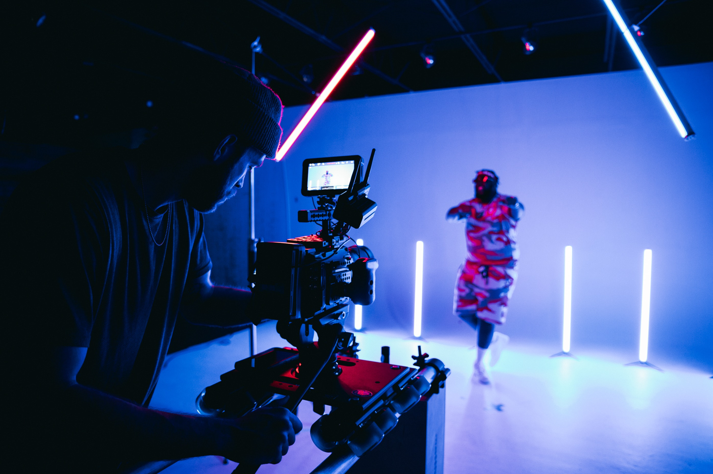

Do It! Padcaster: Translation, Please
 The Challenge
The Challenge
Your challenge is to use a green screen and video recording equipment to travel all over the world and speak in other languages. Create a scale drawing of one of your favorite monuments as a souvenir from the trip.
Getting Started
Set-up Padcaster Studio Kit equipment using the guided instructions or the information found in the Information About Padcaster, Google Translate, and Do Ink Green Screen section.
Project Steps
-
Plan & Rehearse
-
Record
-
Edit & Share
Plan & Rehearse
Now that you have an idea of where you want to “travel” and what you want to say, now is your chance to finalize everything. Plan what you will say, where you will go, and more during this phase of the project.
Select each item to learn more.
1. View 1-2 travel show clips to explore more.
Find an example travel show. Some examples include: Planet Earth, If I Were An Animal, House Hunters International, Lost Cities with Albert Lin, or Legendary Locations.
- What does the host talk about?
- Do they have guests?
- How do they travel to these places?
- Are they alone or with someone?
2. Create your script.
Choose 3-5 different countries to visit. Use a history book and Google to search for different possibilities and monuments.
- Choose 1-2 sentences to share about each location.
- Use Google Translate to translate the sentences into the native language of the specific countries you chose to visit for your video. For example, if you visit the Colosseum, you should speak Italian.
- If possible, find someone who is fluent in the language you are translating, perhaps a native language speaker, to review the translation for accuracy.
3. Choose a monument.
Choose the monument you want to create a scale drawing of for your souvenir.
- Create your scale drawing. Turn it into your own form of street art if you would like.
- Include scale factor.
- Create a smaller or larger version of your scale drawing and include the new scale factor.
4. Rehearse your script.
During rehearsals, have a classmate take some pictures and record a few bloopers (you may get to use these later if you have time for the Extend Yourself section).
/Padcaster_Script_Pexels.jpg "script")
Record
Now that you have prepared your script and rehearsed, you are ready to record your travel channel show. Most travel channel shows require multiple takes to get the right footage. Take your time and start over as many times as you need to. Try to get in one take, if you think you can! Have a classmate take some pictures and images during the actual recording as well (if possible). Don’t forget to share your scale drawing of the monument you drew when you visit it on the show. Refer to the About Technology section for the steps to follow to export your video.

Edit & Share
Using the Do Ink Green Screen app, add the backgrounds to the videos and images that you want to use for your final product. The backgrounds should contain videos or images of the places you are visiting during your recording. Refer to the Quick Links section for the Do Ink Green Screen tutorials. Once you have completed editing, export and prepare to share your videos in for project submission.